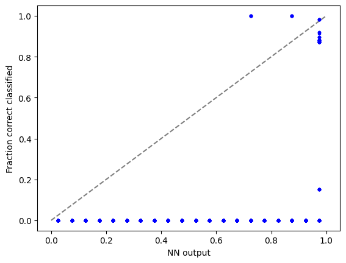
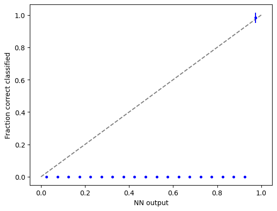

import torch
import torch.nn as nn
import torch.nn.functional as F
import torch.optim as optim
from torchvision import datasets, transforms
from torch.optim.lr_scheduler import StepLR
import numpy as np
import matplotlib.pyplot as plt
import easydictLoad datasets
import deeplake
dstrain = deeplake.load("hub://activeloop/cifar10-train")
dstest = deeplake.load("hub://activeloop/cifar10-test")C:\Users\TRBU\AppData\Local\Packages\PythonSoftwareFoundation.Python.3.11_qbz5n2kfra8p0\LocalCache\local-packages\Python311\site-packages\deeplake\util\check_latest_version.py:32: UserWarning: A newer version of deeplake (3.9.18) is available. It's recommended that you update to the latest version using `pip install -U deeplake`.
warnings.warn(
-Opening dataset in read-only mode as you don't have write permissions.-This dataset can be visualized in Jupyter Notebook by ds.visualize() or at https://app.activeloop.ai/activeloop/cifar10-train
/hub://activeloop/cifar10-train loaded successfully.
Opening dataset in read-only mode as you don't have write permissions.\This dataset can be visualized in Jupyter Notebook by ds.visualize() or at https://app.activeloop.ai/activeloop/cifar10-test
/hub://activeloop/cifar10-test loaded successfully.
1 Train NN
def train(args, model, device, train_loader, optimizer, epoch):
model.train()
for batch_idx, data in enumerate(train_loader):
target = data.popitem()[1].squeeze()
images = data.popitem()[1]
images, target = images.to(device), target.to(device)
optimizer.zero_grad()
output = model(images)
loss = F.nll_loss(output, target)
loss.backward()
optimizer.step()
if batch_idx % args.log_interval == 0:
print('Train Epoch: {} [{}/{} ({:.0f}%)]\tLoss: {:.6f}'.format(
epoch, batch_idx * len(images), len(train_loader.dataset),
100. * batch_idx / len(train_loader), loss.item()))
if args.dry_run:
break
def test(model, device, test_loader):
model.eval()
test_loss = 0
correct = 0
with torch.no_grad():
for data in test_loader:
target = data.popitem()[1].squeeze()
images = data.popitem()[1]
images, target = images.to(device), target.to(device)
output = model(images)
test_loss += F.nll_loss(output, target, reduction='sum').item() # sum up batch loss
pred = output.argmax(dim=1, keepdim=True) # get the index of the max log-probability
correct += pred.eq(target.view_as(pred)).sum().item()
test_loss /= len(test_loader.dataset)
print('\nTest set: Average loss: {:.4f}, Accuracy: {}/{} ({:.0f}%)\n'.format(
test_loss, correct, len(test_loader.dataset),
100. * correct / len(test_loader.dataset)))# Training settings
args = easydict.EasyDict({
"batch_size": 100,
"test_batch_size": 10000,
"train_steps": 1000,
"no_cuda": False,
"no_mps": True,
"seed": 1,
"lr": 0.05,
"gamma": 0.7,
"epochs": 10,
"dry_run": False,
"log_interval": 10,
"save_model": False
})
use_cuda = not args.no_cuda and torch.cuda.is_available()
use_mps = not args.no_mps and torch.backends.mps.is_available()
torch.manual_seed(args.seed)
if use_cuda:
device = torch.device("cuda")
elif use_mps:
device = torch.device("mps")
else:
device = torch.device("cpu")
train_kwargs = {'batch_size': args.batch_size}
test_kwargs = {'batch_size': args.test_batch_size}
if use_cuda:
cuda_kwargs = {'num_workers': 1,
'pin_memory': True,
'shuffle': True}
train_kwargs.update(cuda_kwargs)
test_kwargs.update(cuda_kwargs)
tform = transforms.Compose([
transforms.ToPILImage(), # Must convert to PIL image for subsequent operations to run
transforms.RandomRotation(20), # Image augmentation
transforms.ToTensor(), # Must convert to pytorch tensor for subsequent operations to run
transforms.Normalize([0.5, 0.5, 0.5], [0.5, 0.5, 0.5]),
])
#PyTorch Dataloader
train_loader= dstrain.pytorch(batch_size = args.batch_size, num_workers = 1, transform = {'images': tform, 'labels': None}, shuffle = False)
test_loader= dstest.pytorch(batch_size = args.test_batch_size, num_workers = 1, transform = {'images': tform, 'labels': None}, shuffle = False)
model = torch.hub.load('pytorch/vision:v0.10.0', 'resnet50', pretrained=True)
model.to(device)
optimizer = optim.Adadelta(model.parameters(), lr=args.lr)
scheduler = StepLR(optimizer, step_size=1, gamma=args.gamma)
for epoch in range(1, args.epochs + 1):
train(args, model, device, train_loader, optimizer, epoch)
test(model, device, test_loader)
scheduler.step()
if args.save_model:
torch.save(model.state_dict(), "cifar10.pt")C:\Users\TRBU\AppData\Local\Packages\PythonSoftwareFoundation.Python.3.11_qbz5n2kfra8p0\LocalCache\local-packages\Python311\site-packages\deeplake\integrations\pytorch\common.py:137: UserWarning: Decode method for tensors ['images'] is defaulting to numpy. Please consider specifying a decode_method in .pytorch() that maximizes the data preprocessing speed based on your transformation.
warnings.warn(
Using cache found in C:\Users\TRBU/.cache\torch\hub\pytorch_vision_v0.10.0
C:\Users\TRBU\AppData\Local\Packages\PythonSoftwareFoundation.Python.3.11_qbz5n2kfra8p0\LocalCache\local-packages\Python311\site-packages\torchvision\models\_utils.py:208: UserWarning: The parameter 'pretrained' is deprecated since 0.13 and may be removed in the future, please use 'weights' instead.
warnings.warn(
C:\Users\TRBU\AppData\Local\Packages\PythonSoftwareFoundation.Python.3.11_qbz5n2kfra8p0\LocalCache\local-packages\Python311\site-packages\torchvision\models\_utils.py:223: UserWarning: Arguments other than a weight enum or `None` for 'weights' are deprecated since 0.13 and may be removed in the future. The current behavior is equivalent to passing `weights=ResNet50_Weights.IMAGENET1K_V1`. You can also use `weights=ResNet50_Weights.DEFAULT` to get the most up-to-date weights.
warnings.warn(msg)
Downloading: "https://download.pytorch.org/models/resnet50-0676ba61.pth" to C:\Users\TRBU/.cache\torch\hub\checkpoints\resnet50-0676ba61.pth
100%|██████████| 97.8M/97.8M [00:01<00:00, 82.0MB/s]Train Epoch: 1 [0/50000 (0%)] Loss: 0.620816
Train Epoch: 1 [1000/50000 (2%)] Loss: -3.370033
Train Epoch: 1 [2000/50000 (4%)] Loss: -8.588400
Train Epoch: 1 [3000/50000 (6%)] Loss: -15.938594
Train Epoch: 1 [4000/50000 (8%)] Loss: -22.653206
Train Epoch: 1 [5000/50000 (10%)] Loss: -27.683876
Train Epoch: 1 [6000/50000 (12%)] Loss: -37.926983
Train Epoch: 1 [7000/50000 (14%)] Loss: -43.457207
Train Epoch: 1 [8000/50000 (16%)] Loss: -51.036076
Train Epoch: 1 [9000/50000 (18%)] Loss: -52.807484
Train Epoch: 1 [10000/50000 (20%)] Loss: -65.960510
Train Epoch: 1 [11000/50000 (22%)] Loss: -64.844963
Train Epoch: 1 [12000/50000 (24%)] Loss: -82.903809
Train Epoch: 1 [13000/50000 (26%)] Loss: -89.294617
Train Epoch: 1 [14000/50000 (28%)] Loss: -94.471115
Train Epoch: 1 [15000/50000 (30%)] Loss: -116.539696
Train Epoch: 1 [16000/50000 (32%)] Loss: -128.211929
Train Epoch: 1 [17000/50000 (34%)] Loss: -133.539459
Train Epoch: 1 [18000/50000 (36%)] Loss: -146.064163
Train Epoch: 1 [19000/50000 (38%)] Loss: -155.236374
Train Epoch: 1 [20000/50000 (40%)] Loss: -159.137924
Train Epoch: 1 [21000/50000 (42%)] Loss: -188.863464
Train Epoch: 1 [22000/50000 (44%)] Loss: -202.389450
Train Epoch: 1 [23000/50000 (46%)] Loss: -215.710892
Train Epoch: 1 [24000/50000 (48%)] Loss: -216.333908
Train Epoch: 1 [25000/50000 (50%)] Loss: -242.324493
Train Epoch: 1 [26000/50000 (52%)] Loss: -266.639313
Train Epoch: 1 [27000/50000 (54%)] Loss: -274.255463
Train Epoch: 1 [28000/50000 (56%)] Loss: -268.965088
Train Epoch: 1 [29000/50000 (58%)] Loss: -290.644653
Train Epoch: 1 [30000/50000 (60%)] Loss: -339.182068
Train Epoch: 1 [31000/50000 (62%)] Loss: -334.683899
Train Epoch: 1 [32000/50000 (64%)] Loss: -356.979858
Train Epoch: 1 [33000/50000 (66%)] Loss: -369.846222
Train Epoch: 1 [34000/50000 (68%)] Loss: -407.209656
Train Epoch: 1 [35000/50000 (70%)] Loss: -434.695770
Train Epoch: 1 [36000/50000 (72%)] Loss: -454.379028
Train Epoch: 1 [37000/50000 (74%)] Loss: -482.765198
Train Epoch: 1 [38000/50000 (76%)] Loss: -486.715240
Train Epoch: 1 [39000/50000 (78%)] Loss: -599.686401
Train Epoch: 1 [40000/50000 (80%)] Loss: -600.863342
Train Epoch: 1 [41000/50000 (82%)] Loss: -616.335876
Train Epoch: 1 [42000/50000 (84%)] Loss: -628.213440
Train Epoch: 1 [43000/50000 (86%)] Loss: -700.239197
Train Epoch: 1 [44000/50000 (88%)] Loss: -781.591248
Train Epoch: 1 [45000/50000 (90%)] Loss: -790.742920
Train Epoch: 1 [46000/50000 (92%)] Loss: -799.794434
Train Epoch: 1 [47000/50000 (94%)] Loss: -841.908752
Train Epoch: 1 [48000/50000 (96%)] Loss: -829.473877
Train Epoch: 1 [49000/50000 (98%)] Loss: -998.107117
Test set: Average loss: -1030.4719, Accuracy: 6718/10000 (67%)
Train Epoch: 2 [0/50000 (0%)] Loss: -961.073486
Train Epoch: 2 [1000/50000 (2%)] Loss: -1107.093018
Train Epoch: 2 [2000/50000 (4%)] Loss: -1048.916382
Train Epoch: 2 [3000/50000 (6%)] Loss: -1153.463013
Train Epoch: 2 [4000/50000 (8%)] Loss: -1187.891602
Train Epoch: 2 [5000/50000 (10%)] Loss: -1194.240967
Train Epoch: 2 [6000/50000 (12%)] Loss: -1269.164673
Train Epoch: 2 [7000/50000 (14%)] Loss: -1339.301147
Train Epoch: 2 [8000/50000 (16%)] Loss: -1384.332642
Train Epoch: 2 [9000/50000 (18%)] Loss: -1438.341675
Train Epoch: 2 [10000/50000 (20%)] Loss: -1549.187988
Train Epoch: 2 [11000/50000 (22%)] Loss: -1342.824951
Train Epoch: 2 [12000/50000 (24%)] Loss: -1662.749634
Train Epoch: 2 [13000/50000 (26%)] Loss: -1629.940186
Train Epoch: 2 [14000/50000 (28%)] Loss: -1708.163574
Train Epoch: 2 [15000/50000 (30%)] Loss: -1893.527222
Train Epoch: 2 [16000/50000 (32%)] Loss: -1888.312622
Train Epoch: 2 [17000/50000 (34%)] Loss: -1965.837524
Train Epoch: 2 [18000/50000 (36%)] Loss: -1987.676880
Train Epoch: 2 [19000/50000 (38%)] Loss: -1982.581421
Train Epoch: 2 [20000/50000 (40%)] Loss: -2078.221680
Train Epoch: 2 [21000/50000 (42%)] Loss: -2215.644043
Train Epoch: 2 [22000/50000 (44%)] Loss: -2291.758789
Train Epoch: 2 [23000/50000 (46%)] Loss: -2376.541504
Train Epoch: 2 [24000/50000 (48%)] Loss: -2305.885498
Train Epoch: 2 [25000/50000 (50%)] Loss: -2545.730225
Train Epoch: 2 [26000/50000 (52%)] Loss: -2632.871826
Train Epoch: 2 [27000/50000 (54%)] Loss: -2587.287109
Train Epoch: 2 [28000/50000 (56%)] Loss: -2598.155273
Train Epoch: 2 [29000/50000 (58%)] Loss: -2773.681885
Train Epoch: 2 [30000/50000 (60%)] Loss: -3027.611328
Train Epoch: 2 [31000/50000 (62%)] Loss: -2920.366943
Train Epoch: 2 [32000/50000 (64%)] Loss: -3022.982910
Train Epoch: 2 [33000/50000 (66%)] Loss: -3051.247070
Train Epoch: 2 [34000/50000 (68%)] Loss: -3379.188232
Train Epoch: 2 [35000/50000 (70%)] Loss: -3422.214355
Train Epoch: 2 [36000/50000 (72%)] Loss: -3410.758057
Train Epoch: 2 [37000/50000 (74%)] Loss: -3794.197754
Train Epoch: 2 [38000/50000 (76%)] Loss: -3556.196777
Train Epoch: 2 [39000/50000 (78%)] Loss: -4260.229492
Train Epoch: 2 [40000/50000 (80%)] Loss: -3923.487549
Train Epoch: 2 [41000/50000 (82%)] Loss: -4057.553467
Train Epoch: 2 [42000/50000 (84%)] Loss: -4194.257324
Train Epoch: 2 [43000/50000 (86%)] Loss: -4353.363770
Train Epoch: 2 [44000/50000 (88%)] Loss: -4963.985352
Train Epoch: 2 [45000/50000 (90%)] Loss: -4713.233887
Train Epoch: 2 [46000/50000 (92%)] Loss: -4595.112305
Train Epoch: 2 [47000/50000 (94%)] Loss: -4757.855957
Train Epoch: 2 [48000/50000 (96%)] Loss: -4516.366211
Train Epoch: 2 [49000/50000 (98%)] Loss: -5481.854980
Test set: Average loss: -5372.9024, Accuracy: 6448/10000 (64%)
Train Epoch: 3 [0/50000 (0%)] Loss: -4881.543457
Train Epoch: 3 [1000/50000 (2%)] Loss: -5823.308105
Train Epoch: 3 [2000/50000 (4%)] Loss: -5341.680664
Train Epoch: 3 [3000/50000 (6%)] Loss: -5708.968750
Train Epoch: 3 [4000/50000 (8%)] Loss: -5874.024902
Train Epoch: 3 [5000/50000 (10%)] Loss: -5794.562988
Train Epoch: 3 [6000/50000 (12%)] Loss: -5906.709961
Train Epoch: 3 [7000/50000 (14%)] Loss: -6223.037598
Train Epoch: 3 [8000/50000 (16%)] Loss: -6502.767578
Train Epoch: 3 [9000/50000 (18%)] Loss: -6462.995117
Train Epoch: 3 [10000/50000 (20%)] Loss: -6939.407715
Train Epoch: 3 [11000/50000 (22%)] Loss: -5937.875488
Train Epoch: 3 [12000/50000 (24%)] Loss: -7141.173828
Train Epoch: 3 [13000/50000 (26%)] Loss: -6806.907715
Train Epoch: 3 [14000/50000 (28%)] Loss: -6988.064941
Train Epoch: 3 [15000/50000 (30%)] Loss: -7796.786133
Train Epoch: 3 [16000/50000 (32%)] Loss: -7611.087402
Train Epoch: 3 [17000/50000 (34%)] Loss: -7768.062500
Train Epoch: 3 [18000/50000 (36%)] Loss: -7785.614258
Train Epoch: 3 [19000/50000 (38%)] Loss: -7586.799316
Train Epoch: 3 [20000/50000 (40%)] Loss: -7876.487305
Train Epoch: 3 [21000/50000 (42%)] Loss: -8209.184570
Train Epoch: 3 [22000/50000 (44%)] Loss: -8731.661133
Train Epoch: 3 [23000/50000 (46%)] Loss: -8480.007812
Train Epoch: 3 [24000/50000 (48%)] Loss: -8171.080078
Train Epoch: 3 [25000/50000 (50%)] Loss: -8937.590820
Train Epoch: 3 [26000/50000 (52%)] Loss: -9321.210938
Train Epoch: 3 [27000/50000 (54%)] Loss: -8968.916016
Train Epoch: 3 [28000/50000 (56%)] Loss: -8851.326172
Train Epoch: 3 [29000/50000 (58%)] Loss: -8961.889648
Train Epoch: 3 [30000/50000 (60%)] Loss: -9763.844727
Train Epoch: 3 [31000/50000 (62%)] Loss: -9181.677734
Train Epoch: 3 [32000/50000 (64%)] Loss: -9674.858398
Train Epoch: 3 [33000/50000 (66%)] Loss: -9570.125977
Train Epoch: 3 [34000/50000 (68%)] Loss: -10401.311523
Train Epoch: 3 [35000/50000 (70%)] Loss: -10748.174805
Train Epoch: 3 [36000/50000 (72%)] Loss: -10202.613281
Train Epoch: 3 [37000/50000 (74%)] Loss: -11133.304688
Train Epoch: 3 [38000/50000 (76%)] Loss: -10254.773438
Train Epoch: 3 [39000/50000 (78%)] Loss: -12321.967773
Train Epoch: 3 [40000/50000 (80%)] Loss: -11523.866211
Train Epoch: 3 [41000/50000 (82%)] Loss: -11378.512695
Train Epoch: 3 [42000/50000 (84%)] Loss: -11415.625000
Train Epoch: 3 [43000/50000 (86%)] Loss: -11884.410156
Train Epoch: 3 [44000/50000 (88%)] Loss: -13497.267578
Train Epoch: 3 [45000/50000 (90%)] Loss: -12492.441406
Train Epoch: 3 [46000/50000 (92%)] Loss: -12386.865234
Train Epoch: 3 [47000/50000 (94%)] Loss: -12315.786133
Train Epoch: 3 [48000/50000 (96%)] Loss: -12051.423828
Train Epoch: 3 [49000/50000 (98%)] Loss: -13937.397461
Test set: Average loss: -12909.2896, Accuracy: 6362/10000 (64%)
Train Epoch: 4 [0/50000 (0%)] Loss: -12554.570312
Train Epoch: 4 [1000/50000 (2%)] Loss: -14054.861328
Train Epoch: 4 [2000/50000 (4%)] Loss: -13077.471680
Train Epoch: 4 [3000/50000 (6%)] Loss: -13944.066406
Train Epoch: 4 [4000/50000 (8%)] Loss: -14220.187500
Train Epoch: 4 [5000/50000 (10%)] Loss: -13753.172852
Train Epoch: 4 [6000/50000 (12%)] Loss: -13531.103516
Train Epoch: 4 [7000/50000 (14%)] Loss: -15061.785156
Train Epoch: 4 [8000/50000 (16%)] Loss: -15143.798828
Train Epoch: 4 [9000/50000 (18%)] Loss: -14547.113281
Train Epoch: 4 [10000/50000 (20%)] Loss: -16370.758789
Train Epoch: 4 [11000/50000 (22%)] Loss: -13691.312500
Train Epoch: 4 [12000/50000 (24%)] Loss: -15572.697266
Train Epoch: 4 [13000/50000 (26%)] Loss: -15173.588867
Train Epoch: 4 [14000/50000 (28%)] Loss: -15478.717773
Train Epoch: 4 [15000/50000 (30%)] Loss: -17458.328125
Train Epoch: 4 [16000/50000 (32%)] Loss: -16475.720703
Train Epoch: 4 [17000/50000 (34%)] Loss: -16592.941406
Train Epoch: 4 [18000/50000 (36%)] Loss: -16405.908203
Train Epoch: 4 [19000/50000 (38%)] Loss: -16261.252930
Train Epoch: 4 [20000/50000 (40%)] Loss: -16678.515625
Train Epoch: 4 [21000/50000 (42%)] Loss: -16949.908203
Train Epoch: 4 [22000/50000 (44%)] Loss: -17650.488281
Train Epoch: 4 [23000/50000 (46%)] Loss: -17285.568359
Train Epoch: 4 [24000/50000 (48%)] Loss: -16213.724609
Train Epoch: 4 [25000/50000 (50%)] Loss: -18168.318359
Train Epoch: 4 [26000/50000 (52%)] Loss: -18606.818359
Train Epoch: 4 [27000/50000 (54%)] Loss: -18005.828125
Train Epoch: 4 [28000/50000 (56%)] Loss: -17138.136719
Train Epoch: 4 [29000/50000 (58%)] Loss: -18032.513672
Train Epoch: 4 [30000/50000 (60%)] Loss: -18551.960938
Train Epoch: 4 [31000/50000 (62%)] Loss: -17656.171875
Train Epoch: 4 [32000/50000 (64%)] Loss: -18413.939453
Train Epoch: 4 [33000/50000 (66%)] Loss: -17874.380859
Train Epoch: 4 [34000/50000 (68%)] Loss: -19536.136719
Train Epoch: 4 [35000/50000 (70%)] Loss: -20067.216797
Train Epoch: 4 [36000/50000 (72%)] Loss: -18687.003906
Train Epoch: 4 [37000/50000 (74%)] Loss: -20261.195312
Train Epoch: 4 [38000/50000 (76%)] Loss: -18845.126953
Train Epoch: 4 [39000/50000 (78%)] Loss: -21996.601562
Train Epoch: 4 [40000/50000 (80%)] Loss: -20405.869141
Train Epoch: 4 [41000/50000 (82%)] Loss: -20040.636719
Train Epoch: 4 [42000/50000 (84%)] Loss: -20420.660156
Train Epoch: 4 [43000/50000 (86%)] Loss: -20703.269531
Train Epoch: 4 [44000/50000 (88%)] Loss: -23246.242188
Train Epoch: 4 [45000/50000 (90%)] Loss: -21693.482422
Train Epoch: 4 [46000/50000 (92%)] Loss: -21334.171875
Train Epoch: 4 [47000/50000 (94%)] Loss: -20823.662109
Train Epoch: 4 [48000/50000 (96%)] Loss: -19976.664062
Train Epoch: 4 [49000/50000 (98%)] Loss: -23803.865234
Test set: Average loss: -21444.8976, Accuracy: 5873/10000 (59%)
Train Epoch: 5 [0/50000 (0%)] Loss: -21393.419922
Train Epoch: 5 [1000/50000 (2%)] Loss: -23464.537109
Train Epoch: 5 [2000/50000 (4%)] Loss: -21522.470703
Train Epoch: 5 [3000/50000 (6%)] Loss: -22974.359375
Train Epoch: 5 [4000/50000 (8%)] Loss: -23284.681641
Train Epoch: 5 [5000/50000 (10%)] Loss: -22751.402344
Train Epoch: 5 [6000/50000 (12%)] Loss: -21944.814453
Train Epoch: 5 [7000/50000 (14%)] Loss: -23710.207031
Train Epoch: 5 [8000/50000 (16%)] Loss: -24320.080078
Train Epoch: 5 [9000/50000 (18%)] Loss: -23576.324219
Train Epoch: 5 [10000/50000 (20%)] Loss: -25546.136719
Train Epoch: 5 [11000/50000 (22%)] Loss: -21811.921875
Train Epoch: 5 [12000/50000 (24%)] Loss: -24836.046875
Train Epoch: 5 [13000/50000 (26%)] Loss: -23551.910156
Train Epoch: 5 [14000/50000 (28%)] Loss: -24760.322266
Train Epoch: 5 [15000/50000 (30%)] Loss: -26871.394531
Train Epoch: 5 [16000/50000 (32%)] Loss: -25652.712891
Train Epoch: 5 [17000/50000 (34%)] Loss: -25348.439453
Train Epoch: 5 [18000/50000 (36%)] Loss: -25385.400391
Train Epoch: 5 [19000/50000 (38%)] Loss: -24767.900391
Train Epoch: 5 [20000/50000 (40%)] Loss: -25026.126953
Train Epoch: 5 [21000/50000 (42%)] Loss: -26248.105469
Train Epoch: 5 [22000/50000 (44%)] Loss: -27483.925781
Train Epoch: 5 [23000/50000 (46%)] Loss: -25750.320312
Train Epoch: 5 [24000/50000 (48%)] Loss: -24134.394531
Train Epoch: 5 [25000/50000 (50%)] Loss: -26595.289062
Train Epoch: 5 [26000/50000 (52%)] Loss: -27823.726562
Train Epoch: 5 [27000/50000 (54%)] Loss: -26376.439453
Train Epoch: 5 [28000/50000 (56%)] Loss: -25678.117188
Train Epoch: 5 [29000/50000 (58%)] Loss: -25980.429688
Train Epoch: 5 [30000/50000 (60%)] Loss: -27247.244141
Train Epoch: 5 [31000/50000 (62%)] Loss: -25668.841797
Train Epoch: 5 [32000/50000 (64%)] Loss: -26709.445312
Train Epoch: 5 [33000/50000 (66%)] Loss: -25466.082031
Train Epoch: 5 [34000/50000 (68%)] Loss: -28963.386719
Train Epoch: 5 [35000/50000 (70%)] Loss: -28238.523438
Train Epoch: 5 [36000/50000 (72%)] Loss: -26241.193359
Train Epoch: 5 [37000/50000 (74%)] Loss: -28974.921875
Train Epoch: 5 [38000/50000 (76%)] Loss: -26178.177734
Train Epoch: 5 [39000/50000 (78%)] Loss: -30973.357422
Train Epoch: 5 [40000/50000 (80%)] Loss: -28669.294922
Train Epoch: 5 [41000/50000 (82%)] Loss: -27462.375000
Train Epoch: 5 [42000/50000 (84%)] Loss: -28236.462891
Train Epoch: 5 [43000/50000 (86%)] Loss: -28324.099609
Train Epoch: 5 [44000/50000 (88%)] Loss: -32627.375000
Train Epoch: 5 [45000/50000 (90%)] Loss: -29531.119141
Train Epoch: 5 [46000/50000 (92%)] Loss: -29326.720703
Train Epoch: 5 [47000/50000 (94%)] Loss: -28377.095703
Train Epoch: 5 [48000/50000 (96%)] Loss: -27610.294922
Train Epoch: 5 [49000/50000 (98%)] Loss: -32430.630859
Test set: Average loss: -28273.3248, Accuracy: 5825/10000 (58%)
Train Epoch: 6 [0/50000 (0%)] Loss: -28262.060547
Train Epoch: 6 [1000/50000 (2%)] Loss: -31503.761719
Train Epoch: 6 [2000/50000 (4%)] Loss: -29264.775391
Train Epoch: 6 [3000/50000 (6%)] Loss: -30930.222656
Train Epoch: 6 [4000/50000 (8%)] Loss: -30571.509766
Train Epoch: 6 [5000/50000 (10%)] Loss: -30185.457031
Train Epoch: 6 [6000/50000 (12%)] Loss: -29378.390625
Train Epoch: 6 [7000/50000 (14%)] Loss: -31716.234375
Train Epoch: 6 [8000/50000 (16%)] Loss: -31214.578125
Train Epoch: 6 [9000/50000 (18%)] Loss: -30800.876953
Train Epoch: 6 [10000/50000 (20%)] Loss: -33205.726562
Train Epoch: 6 [11000/50000 (22%)] Loss: -28136.060547
Train Epoch: 6 [12000/50000 (24%)] Loss: -31985.144531
Train Epoch: 6 [13000/50000 (26%)] Loss: -30503.482422
Train Epoch: 6 [14000/50000 (28%)] Loss: -31649.328125
Train Epoch: 6 [15000/50000 (30%)] Loss: -35233.933594
Train Epoch: 6 [16000/50000 (32%)] Loss: -32319.937500
Train Epoch: 6 [17000/50000 (34%)] Loss: -32502.554688
Train Epoch: 6 [18000/50000 (36%)] Loss: -32301.216797
Train Epoch: 6 [19000/50000 (38%)] Loss: -31511.320312
Train Epoch: 6 [20000/50000 (40%)] Loss: -32094.500000
Train Epoch: 6 [21000/50000 (42%)] Loss: -33526.500000
Train Epoch: 6 [22000/50000 (44%)] Loss: -34232.046875
Train Epoch: 6 [23000/50000 (46%)] Loss: -33497.621094
Train Epoch: 6 [24000/50000 (48%)] Loss: -30969.410156
Train Epoch: 6 [25000/50000 (50%)] Loss: -33465.789062
Train Epoch: 6 [26000/50000 (52%)] Loss: -34897.199219
Train Epoch: 6 [27000/50000 (54%)] Loss: -32844.683594
Train Epoch: 6 [28000/50000 (56%)] Loss: -31793.675781
Train Epoch: 6 [29000/50000 (58%)] Loss: -31998.507812
Train Epoch: 6 [30000/50000 (60%)] Loss: -33726.628906
Train Epoch: 6 [31000/50000 (62%)] Loss: -31502.527344
Train Epoch: 6 [32000/50000 (64%)] Loss: -32548.210938
Train Epoch: 6 [33000/50000 (66%)] Loss: -31819.115234
Train Epoch: 6 [34000/50000 (68%)] Loss: -35894.066406
Train Epoch: 6 [35000/50000 (70%)] Loss: -34856.140625
Train Epoch: 6 [36000/50000 (72%)] Loss: -32553.527344
Train Epoch: 6 [37000/50000 (74%)] Loss: -35010.835938
Train Epoch: 6 [38000/50000 (76%)] Loss: -32266.150391
Train Epoch: 6 [39000/50000 (78%)] Loss: -37566.171875
Train Epoch: 6 [40000/50000 (80%)] Loss: -35401.027344
Train Epoch: 6 [41000/50000 (82%)] Loss: -33551.500000
Train Epoch: 6 [42000/50000 (84%)] Loss: -34086.652344
Train Epoch: 6 [43000/50000 (86%)] Loss: -34399.218750
Train Epoch: 6 [44000/50000 (88%)] Loss: -39130.292969
Train Epoch: 6 [45000/50000 (90%)] Loss: -34953.238281
Train Epoch: 6 [46000/50000 (92%)] Loss: -34792.261719
Train Epoch: 6 [47000/50000 (94%)] Loss: -33887.925781
Train Epoch: 6 [48000/50000 (96%)] Loss: -32359.732422
Train Epoch: 6 [49000/50000 (98%)] Loss: -37984.628906
Test set: Average loss: -33599.5136, Accuracy: 5790/10000 (58%)
Train Epoch: 7 [0/50000 (0%)] Loss: -34060.382812
Train Epoch: 7 [1000/50000 (2%)] Loss: -37632.101562
Train Epoch: 7 [2000/50000 (4%)] Loss: -33529.085938
Train Epoch: 7 [3000/50000 (6%)] Loss: -35587.542969
Train Epoch: 7 [4000/50000 (8%)] Loss: -36340.992188
Train Epoch: 7 [5000/50000 (10%)] Loss: -36247.261719
Train Epoch: 7 [6000/50000 (12%)] Loss: -34748.519531
Train Epoch: 7 [7000/50000 (14%)] Loss: -37761.468750
Train Epoch: 7 [8000/50000 (16%)] Loss: -37183.964844
Train Epoch: 7 [9000/50000 (18%)] Loss: -35060.636719
Train Epoch: 7 [10000/50000 (20%)] Loss: -39623.890625
Train Epoch: 7 [11000/50000 (22%)] Loss: -33501.691406
Train Epoch: 7 [12000/50000 (24%)] Loss: -37369.804688
Train Epoch: 7 [13000/50000 (26%)] Loss: -35600.738281
Train Epoch: 7 [14000/50000 (28%)] Loss: -37762.710938
Train Epoch: 7 [15000/50000 (30%)] Loss: -40629.800781
Train Epoch: 7 [16000/50000 (32%)] Loss: -37628.734375
Train Epoch: 7 [17000/50000 (34%)] Loss: -37129.468750
Train Epoch: 7 [18000/50000 (36%)] Loss: -37795.453125
Train Epoch: 7 [19000/50000 (38%)] Loss: -35545.109375
Train Epoch: 7 [20000/50000 (40%)] Loss: -36647.023438
Train Epoch: 7 [21000/50000 (42%)] Loss: -38436.835938
Train Epoch: 7 [22000/50000 (44%)] Loss: -39865.367188
Train Epoch: 7 [23000/50000 (46%)] Loss: -38221.550781
Train Epoch: 7 [24000/50000 (48%)] Loss: -34627.410156
Train Epoch: 7 [25000/50000 (50%)] Loss: -38521.546875
Train Epoch: 7 [26000/50000 (52%)] Loss: -39625.945312
Train Epoch: 7 [27000/50000 (54%)] Loss: -37269.710938
Train Epoch: 7 [28000/50000 (56%)] Loss: -36460.843750
Train Epoch: 7 [29000/50000 (58%)] Loss: -37232.289062
Train Epoch: 7 [30000/50000 (60%)] Loss: -38514.121094
Train Epoch: 7 [31000/50000 (62%)] Loss: -35732.484375
Train Epoch: 7 [32000/50000 (64%)] Loss: -36433.691406
Train Epoch: 7 [33000/50000 (66%)] Loss: -35781.320312
Train Epoch: 7 [34000/50000 (68%)] Loss: -40043.894531
Train Epoch: 7 [35000/50000 (70%)] Loss: -38738.652344
Train Epoch: 7 [36000/50000 (72%)] Loss: -36361.699219
Train Epoch: 7 [37000/50000 (74%)] Loss: -39829.230469
Train Epoch: 7 [38000/50000 (76%)] Loss: -36239.683594
Train Epoch: 7 [39000/50000 (78%)] Loss: -42374.285156
Train Epoch: 7 [40000/50000 (80%)] Loss: -39779.359375
Train Epoch: 7 [41000/50000 (82%)] Loss: -37433.871094
Train Epoch: 7 [42000/50000 (84%)] Loss: -37796.421875
Train Epoch: 7 [43000/50000 (86%)] Loss: -38654.101562
Train Epoch: 7 [44000/50000 (88%)] Loss: -43619.769531
Train Epoch: 7 [45000/50000 (90%)] Loss: -39511.234375
Train Epoch: 7 [46000/50000 (92%)] Loss: -38972.101562
Train Epoch: 7 [47000/50000 (94%)] Loss: -37460.343750
Train Epoch: 7 [48000/50000 (96%)] Loss: -36750.078125
Train Epoch: 7 [49000/50000 (98%)] Loss: -41481.785156
Test set: Average loss: -36498.2592, Accuracy: 5692/10000 (57%)
Train Epoch: 8 [0/50000 (0%)] Loss: -37869.734375
Train Epoch: 8 [1000/50000 (2%)] Loss: -41087.664062
Train Epoch: 8 [2000/50000 (4%)] Loss: -37772.773438
Train Epoch: 8 [3000/50000 (6%)] Loss: -39602.140625
Train Epoch: 8 [4000/50000 (8%)] Loss: -40275.398438
Train Epoch: 8 [5000/50000 (10%)] Loss: -39308.699219
Train Epoch: 8 [6000/50000 (12%)] Loss: -38010.765625
Train Epoch: 8 [7000/50000 (14%)] Loss: -41457.976562
Train Epoch: 8 [8000/50000 (16%)] Loss: -40347.992188
Train Epoch: 8 [9000/50000 (18%)] Loss: -38844.050781
Train Epoch: 8 [10000/50000 (20%)] Loss: -42840.269531
Train Epoch: 8 [11000/50000 (22%)] Loss: -35527.542969
Train Epoch: 8 [12000/50000 (24%)] Loss: -40179.820312
Train Epoch: 8 [13000/50000 (26%)] Loss: -38783.289062
Train Epoch: 8 [14000/50000 (28%)] Loss: -39699.179688
Train Epoch: 8 [15000/50000 (30%)] Loss: -45008.144531
Train Epoch: 8 [16000/50000 (32%)] Loss: -41302.582031
Train Epoch: 8 [17000/50000 (34%)] Loss: -40693.265625
Train Epoch: 8 [18000/50000 (36%)] Loss: -40421.941406
Train Epoch: 8 [19000/50000 (38%)] Loss: -38786.808594
Train Epoch: 8 [20000/50000 (40%)] Loss: -40042.589844
Train Epoch: 8 [21000/50000 (42%)] Loss: -41791.593750
Train Epoch: 8 [22000/50000 (44%)] Loss: -43211.468750
Train Epoch: 8 [23000/50000 (46%)] Loss: -41632.101562
Train Epoch: 8 [24000/50000 (48%)] Loss: -38275.101562
Train Epoch: 8 [25000/50000 (50%)] Loss: -42114.175781
Train Epoch: 8 [26000/50000 (52%)] Loss: -43214.230469
Train Epoch: 8 [27000/50000 (54%)] Loss: -40988.343750
Train Epoch: 8 [28000/50000 (56%)] Loss: -39023.328125
Train Epoch: 8 [29000/50000 (58%)] Loss: -39564.718750
Train Epoch: 8 [30000/50000 (60%)] Loss: -41081.148438
Train Epoch: 8 [31000/50000 (62%)] Loss: -37743.695312
Train Epoch: 8 [32000/50000 (64%)] Loss: -40044.250000
Train Epoch: 8 [33000/50000 (66%)] Loss: -38740.335938
Train Epoch: 8 [34000/50000 (68%)] Loss: -42814.015625
Train Epoch: 8 [35000/50000 (70%)] Loss: -42677.984375
Train Epoch: 8 [36000/50000 (72%)] Loss: -39196.648438
Train Epoch: 8 [37000/50000 (74%)] Loss: -42299.808594
Train Epoch: 8 [38000/50000 (76%)] Loss: -38184.171875
Train Epoch: 8 [39000/50000 (78%)] Loss: -45045.281250
Train Epoch: 8 [40000/50000 (80%)] Loss: -42237.074219
Train Epoch: 8 [41000/50000 (82%)] Loss: -40297.515625
Train Epoch: 8 [42000/50000 (84%)] Loss: -40751.195312
Train Epoch: 8 [43000/50000 (86%)] Loss: -41293.691406
Train Epoch: 8 [44000/50000 (88%)] Loss: -46175.304688
Train Epoch: 8 [45000/50000 (90%)] Loss: -42358.398438
Train Epoch: 8 [46000/50000 (92%)] Loss: -40989.144531
Train Epoch: 8 [47000/50000 (94%)] Loss: -39492.878906
Train Epoch: 8 [48000/50000 (96%)] Loss: -39622.675781
Train Epoch: 8 [49000/50000 (98%)] Loss: -44869.875000
Test set: Average loss: -38830.7776, Accuracy: 5659/10000 (57%)
Train Epoch: 9 [0/50000 (0%)] Loss: -40074.503906
Train Epoch: 9 [1000/50000 (2%)] Loss: -44017.703125
Train Epoch: 9 [2000/50000 (4%)] Loss: -39856.453125
Train Epoch: 9 [3000/50000 (6%)] Loss: -42295.906250
Train Epoch: 9 [4000/50000 (8%)] Loss: -42691.480469
Train Epoch: 9 [5000/50000 (10%)] Loss: -42053.664062
Train Epoch: 9 [6000/50000 (12%)] Loss: -40121.675781
Train Epoch: 9 [7000/50000 (14%)] Loss: -43435.320312
Train Epoch: 9 [8000/50000 (16%)] Loss: -42597.558594
Train Epoch: 9 [9000/50000 (18%)] Loss: -41461.078125
Train Epoch: 9 [10000/50000 (20%)] Loss: -44948.699219
Train Epoch: 9 [11000/50000 (22%)] Loss: -38673.390625
Train Epoch: 9 [12000/50000 (24%)] Loss: -43024.644531
Train Epoch: 9 [13000/50000 (26%)] Loss: -40748.890625
Train Epoch: 9 [14000/50000 (28%)] Loss: -42436.085938
Train Epoch: 9 [15000/50000 (30%)] Loss: -47306.953125
Train Epoch: 9 [16000/50000 (32%)] Loss: -44018.480469
Train Epoch: 9 [17000/50000 (34%)] Loss: -43118.109375
Train Epoch: 9 [18000/50000 (36%)] Loss: -43006.203125
Train Epoch: 9 [19000/50000 (38%)] Loss: -41168.515625
Train Epoch: 9 [20000/50000 (40%)] Loss: -42379.191406
Train Epoch: 9 [21000/50000 (42%)] Loss: -43538.761719
Train Epoch: 9 [22000/50000 (44%)] Loss: -44256.636719
Train Epoch: 9 [23000/50000 (46%)] Loss: -43547.500000
Train Epoch: 9 [24000/50000 (48%)] Loss: -39712.410156
Train Epoch: 9 [25000/50000 (50%)] Loss: -43518.476562
Train Epoch: 9 [26000/50000 (52%)] Loss: -44813.078125
Train Epoch: 9 [27000/50000 (54%)] Loss: -42593.761719
Train Epoch: 9 [28000/50000 (56%)] Loss: -41316.261719
Train Epoch: 9 [29000/50000 (58%)] Loss: -41774.238281
Train Epoch: 9 [30000/50000 (60%)] Loss: -42882.363281
Train Epoch: 9 [31000/50000 (62%)] Loss: -39387.535156
Train Epoch: 9 [32000/50000 (64%)] Loss: -41896.921875
Train Epoch: 9 [33000/50000 (66%)] Loss: -40780.031250
Train Epoch: 9 [34000/50000 (68%)] Loss: -44814.988281
Train Epoch: 9 [35000/50000 (70%)] Loss: -44341.691406
Train Epoch: 9 [36000/50000 (72%)] Loss: -40978.609375
Train Epoch: 9 [37000/50000 (74%)] Loss: -44313.945312
Train Epoch: 9 [38000/50000 (76%)] Loss: -39995.234375
Train Epoch: 9 [39000/50000 (78%)] Loss: -47058.804688
Train Epoch: 9 [40000/50000 (80%)] Loss: -44172.480469
Train Epoch: 9 [41000/50000 (82%)] Loss: -41624.371094
Train Epoch: 9 [42000/50000 (84%)] Loss: -42552.046875
Train Epoch: 9 [43000/50000 (86%)] Loss: -42126.031250
Train Epoch: 9 [44000/50000 (88%)] Loss: -48171.863281
Train Epoch: 9 [45000/50000 (90%)] Loss: -44277.750000
Train Epoch: 9 [46000/50000 (92%)] Loss: -42648.476562
Train Epoch: 9 [47000/50000 (94%)] Loss: -41654.843750
Train Epoch: 9 [48000/50000 (96%)] Loss: -40990.117188
Train Epoch: 9 [49000/50000 (98%)] Loss: -46445.644531
Test set: Average loss: -39853.8560, Accuracy: 5612/10000 (56%)
Train Epoch: 10 [0/50000 (0%)] Loss: -41810.984375
Train Epoch: 10 [1000/50000 (2%)] Loss: -45155.003906
Train Epoch: 10 [2000/50000 (4%)] Loss: -41069.578125
Train Epoch: 10 [3000/50000 (6%)] Loss: -43554.355469
Train Epoch: 10 [4000/50000 (8%)] Loss: -43264.804688
Train Epoch: 10 [5000/50000 (10%)] Loss: -42494.050781
Train Epoch: 10 [6000/50000 (12%)] Loss: -41223.769531
Train Epoch: 10 [7000/50000 (14%)] Loss: -45202.816406
Train Epoch: 10 [8000/50000 (16%)] Loss: -44748.496094
Train Epoch: 10 [9000/50000 (18%)] Loss: -43803.593750
Train Epoch: 10 [10000/50000 (20%)] Loss: -46174.375000
Train Epoch: 10 [11000/50000 (22%)] Loss: -39657.226562
Train Epoch: 10 [12000/50000 (24%)] Loss: -45120.410156
Train Epoch: 10 [13000/50000 (26%)] Loss: -42357.203125
Train Epoch: 10 [14000/50000 (28%)] Loss: -44288.386719
Train Epoch: 10 [15000/50000 (30%)] Loss: -48606.183594
Train Epoch: 10 [16000/50000 (32%)] Loss: -44988.214844
Train Epoch: 10 [17000/50000 (34%)] Loss: -43812.554688
Train Epoch: 10 [18000/50000 (36%)] Loss: -43790.824219
Train Epoch: 10 [19000/50000 (38%)] Loss: -42103.300781
Train Epoch: 10 [20000/50000 (40%)] Loss: -43413.523438
Train Epoch: 10 [21000/50000 (42%)] Loss: -45513.394531
Train Epoch: 10 [22000/50000 (44%)] Loss: -46142.941406
Train Epoch: 10 [23000/50000 (46%)] Loss: -45275.203125
Train Epoch: 10 [24000/50000 (48%)] Loss: -41315.914062
Train Epoch: 10 [25000/50000 (50%)] Loss: -45236.394531
Train Epoch: 10 [26000/50000 (52%)] Loss: -46193.253906
Train Epoch: 10 [27000/50000 (54%)] Loss: -43039.730469
Train Epoch: 10 [28000/50000 (56%)] Loss: -41812.296875
Train Epoch: 10 [29000/50000 (58%)] Loss: -43011.664062
Train Epoch: 10 [30000/50000 (60%)] Loss: -43134.988281
Train Epoch: 10 [31000/50000 (62%)] Loss: -40360.386719
Train Epoch: 10 [32000/50000 (64%)] Loss: -42939.410156
Train Epoch: 10 [33000/50000 (66%)] Loss: -41181.859375
Train Epoch: 10 [34000/50000 (68%)] Loss: -45796.871094
Train Epoch: 10 [35000/50000 (70%)] Loss: -45886.628906
Train Epoch: 10 [36000/50000 (72%)] Loss: -42337.359375
Train Epoch: 10 [37000/50000 (74%)] Loss: -45435.671875
Train Epoch: 10 [38000/50000 (76%)] Loss: -40774.867188
Train Epoch: 10 [39000/50000 (78%)] Loss: -47767.750000
Train Epoch: 10 [40000/50000 (80%)] Loss: -45522.804688
Train Epoch: 10 [41000/50000 (82%)] Loss: -42916.203125
Train Epoch: 10 [42000/50000 (84%)] Loss: -44187.250000
Train Epoch: 10 [43000/50000 (86%)] Loss: -43554.566406
Train Epoch: 10 [44000/50000 (88%)] Loss: -49549.996094
Train Epoch: 10 [45000/50000 (90%)] Loss: -44414.796875
Train Epoch: 10 [46000/50000 (92%)] Loss: -43346.550781
Train Epoch: 10 [47000/50000 (94%)] Loss: -42928.699219
Train Epoch: 10 [48000/50000 (96%)] Loss: -41558.699219
Train Epoch: 10 [49000/50000 (98%)] Loss: -47187.273438
Test set: Average loss: -40804.6752, Accuracy: 5590/10000 (56%)
2 Tests on trained NN
model.eval()
with torch.no_grad():
for data, target in test_loader:
data, target = data.to(device), target.to(device)
output = model(data)
pred = output.argmax(dim=1, keepdim=True) # get the index of the max log-probability
pred2 = torch.topk(output, k=2, dim=1)[1][:,1] # index of second largest log-prob
pred2 = pred2.reshape(pred2.shape[0],1)2.1 Correct classified vs actual number as a function of ML confidence for max log-prob
## Transform to range [0,1]
output_softmax = torch.softmax(output, dim=1)
## Select largest entry
selected_entries = torch.gather(output_softmax, 1, pred)step = 0.05
cat = 1
binMean = []
correctFreq = []
error = []
correct = []
for value in np.arange(0, 1.0, step):
start = value
end = start+step
# Select entries with convidence in interval (start,end]
conf_in_range = selected_entries[(selected_entries>start) & (selected_entries<=end)]
pred_in_range = pred[(selected_entries>start) & (selected_entries<=end)]
targ_in_range = target[[(selected_entries>start)[:,0] & (selected_entries<=end)[:,0]]].squeeze()
binMean.append( start + step/2 )
correct.append( (pred_in_range == targ_in_range).sum().item() )
correctFreq.append( (pred_in_range == targ_in_range).sum().item()/targ_in_range.shape[0] if targ_in_range.shape[0]!=0 else 0 )
error.append( np.sqrt((pred_in_range == targ_in_range).sum().item())/targ_in_range.shape[0] if targ_in_range.shape[0]!=0 else 0 )
plt.plot([0,1], [0,1], '--', color='grey')
plt.errorbar(binMean, correctFreq, error, marker='.', linestyle='', color='blue')
plt.xlabel("NN output")
plt.ylabel("Fraction correct classified")
plt.show()--------------------------------------------------------------------------- IndexError Traceback (most recent call last) Cell In[7], line 19 17 binMean.append( start + step/2 ) 18 correct.append( (pred_in_range == targ_in_range).sum().item() ) ---> 19 correctFreq.append( (pred_in_range == targ_in_range).sum().item()/targ_in_range.shape[0] if targ_in_range.shape[0]!=0 else 0 ) 20 error.append( np.sqrt((pred_in_range == targ_in_range).sum().item())/targ_in_range.shape[0] if targ_in_range.shape[0]!=0 else 0 ) 22 plt.plot([0,1], [0,1], '--', color='grey') IndexError: tuple index out of range
2.2 Classwise check
step = 0.05
binMean = []
correctFreq = []
error = []
correct = []
plt.plot([0,1], [0,1], '--', color='grey')
for cat in np.arange(0,10):
for value in np.arange(0, 1.0, step):
start = value
end = start+step
# Select entries with convidence in interval (start,end]
conf_in_range = selected_entries[(selected_entries>start) & (selected_entries<=end)]
pred_in_range = pred[(selected_entries>start) & (selected_entries<=end)]
targ_in_range = target[[(selected_entries>start)[:,0] & (selected_entries<=end)[:,0]]].squeeze()
# Confine to only entries with target = cat
conf_in_range = conf_in_range[targ_in_range==cat]
pred_in_range = pred_in_range[targ_in_range==cat]
targ_in_range = targ_in_range[targ_in_range==cat]
binMean.append( start + step/2 )
correct.append( (pred_in_range == targ_in_range).sum().item() )
correctFreq.append( (pred_in_range == targ_in_range).sum().item()/targ_in_range.shape[0] if targ_in_range.shape[0]!=0 else 0 )
error.append( np.sqrt((pred_in_range == targ_in_range).sum().item())/targ_in_range.shape[0] if targ_in_range.shape[0]!=0 else 0 )
plt.plot(binMean, correctFreq, marker='.', linestyle='', linewidth=0.1, color='blue')
plt.xlabel("NN output")
plt.ylabel("Fraction correct classified")
plt.show()
step = 0.05
binMean = []
correctFreq = []
error = []
correct = []
plt.plot([0,1], [0,1], '--', color='grey')
cat = 6
for value in np.arange(0, 1.0, step):
start = value
end = start+step
# Select entries with convidence in interval (start,end]
conf_in_range = selected_entries[(selected_entries>start) & (selected_entries<=end)]
pred_in_range = pred[(selected_entries>start) & (selected_entries<=end)]
targ_in_range = target[[(selected_entries>start)[:,0] & (selected_entries<=end)[:,0]]].squeeze()
# Confine to only entries with target = cat
conf_in_range = conf_in_range[targ_in_range==cat]
pred_in_range = pred_in_range[targ_in_range==cat]
targ_in_range = targ_in_range[targ_in_range==cat]
binMean.append( start + step/2 )
correct.append( (pred_in_range == targ_in_range).sum().item() )
correctFreq.append( (pred_in_range == targ_in_range).sum().item()/targ_in_range.shape[0] if targ_in_range.shape[0]!=0 else 0 )
error.append( np.sqrt((pred_in_range == targ_in_range).sum().item())/targ_in_range.shape[0] if targ_in_range.shape[0]!=0 else 0 )
plt.errorbar(binMean, correctFreq, error, marker='.', linestyle='', color='blue')
plt.xlabel("NN output")
plt.ylabel("Fraction correct classified")
plt.show()
The Kernel crashed while executing code in the current cell or a previous cell. Please review the code in the cell(s) to identify a possible cause of the failure. Click <a href='https://aka.ms/vscodeJupyterKernelCrash'>here</a> for more info. View Jupyter <a href='command:jupyter.viewOutput'>log</a> for further details.